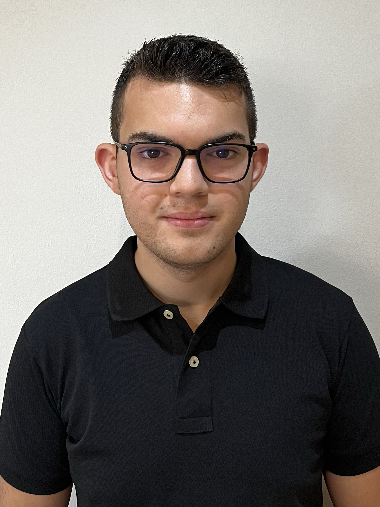
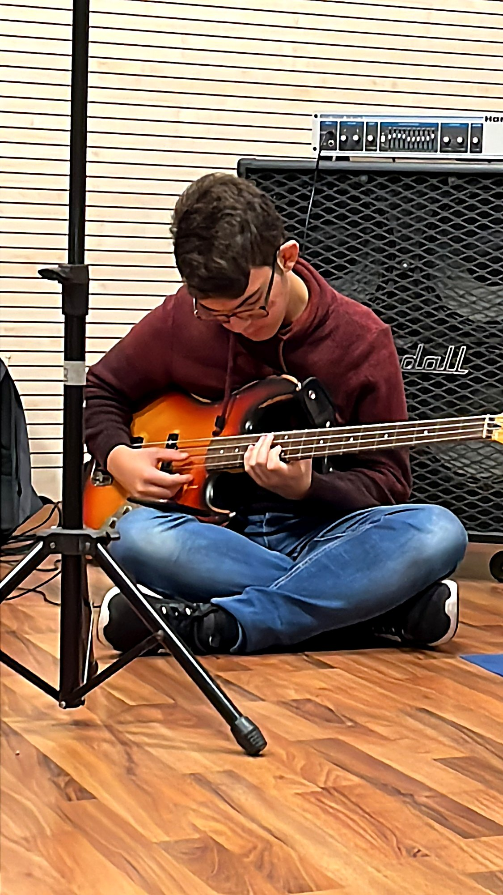
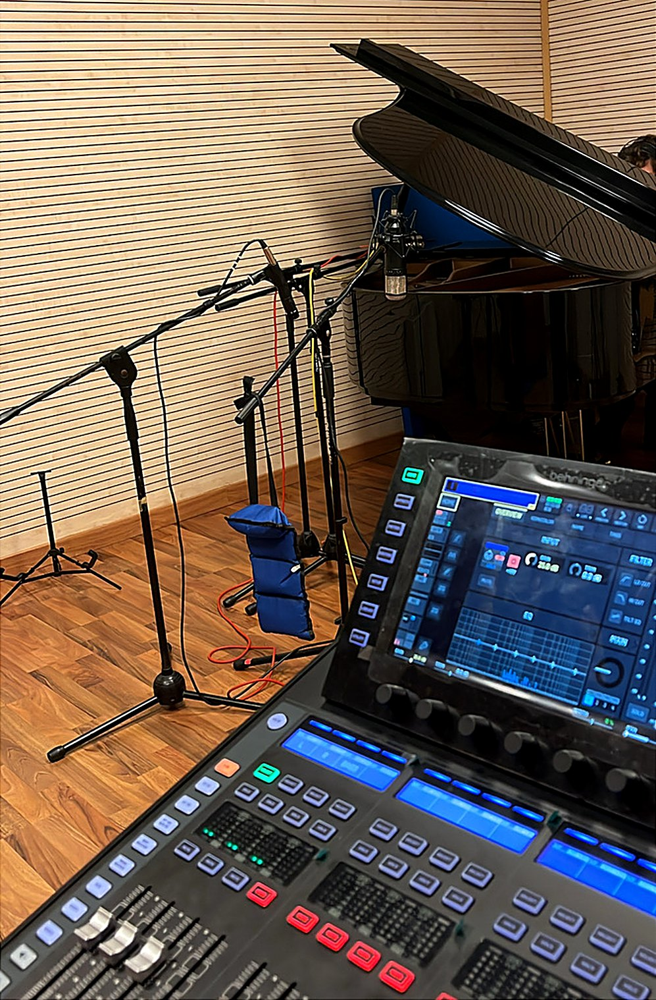
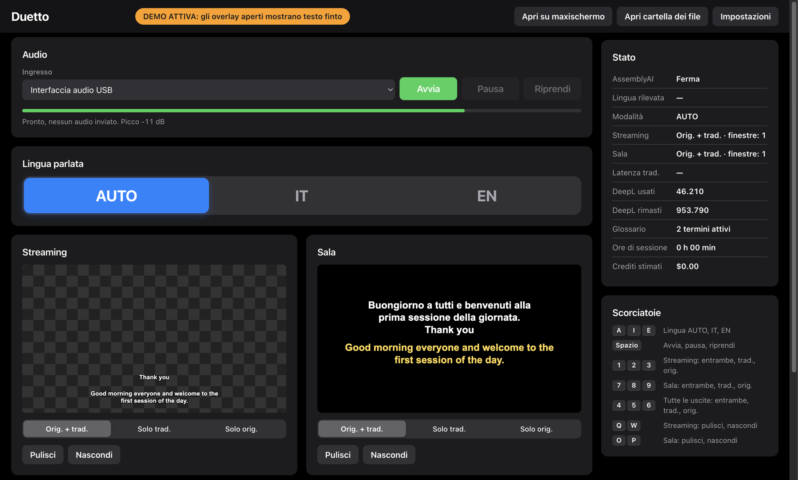
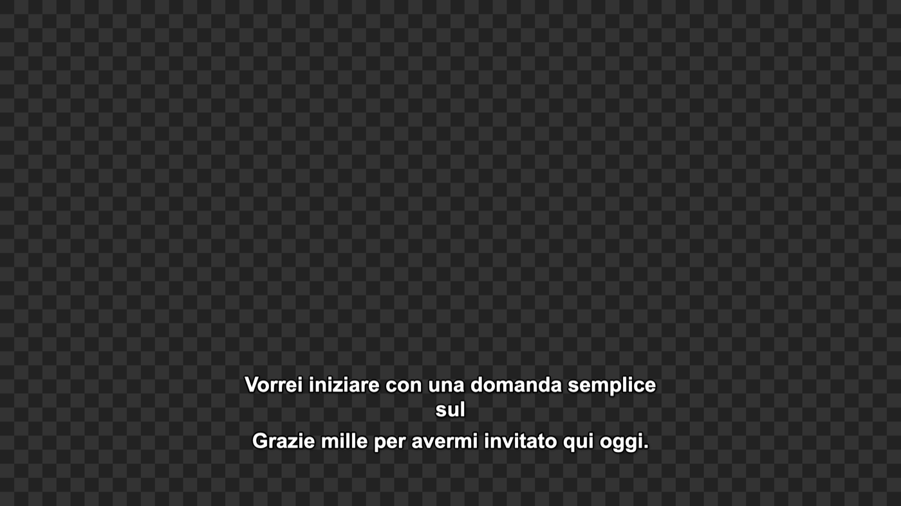
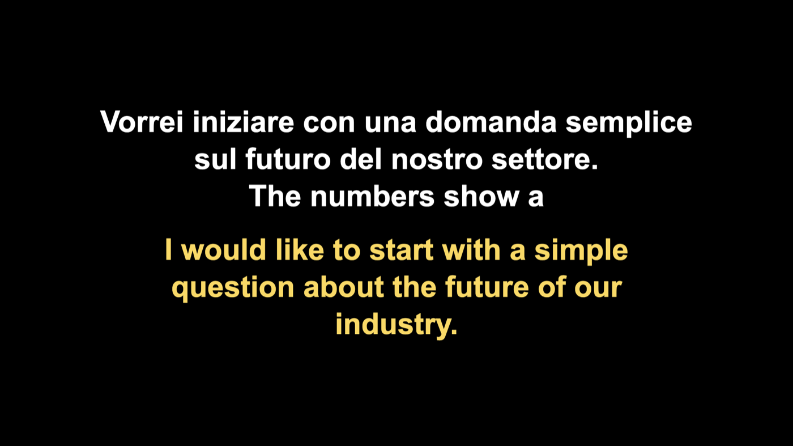
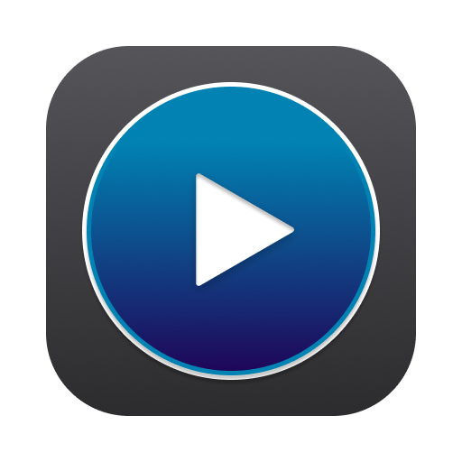

Il live
Audio, video e luci per eventi e spettacoli. Montare, cablare, far suonare tutto prima che entri il pubblico.

Suono il basso, passo le serate dietro un mixer e quando torno a casa faccio scrivere all'AI il software che avrei voluto avere in regia. Io porto le idee, i caffè e i bug report. Questo è il mio angolo: ti racconto un po' di me e delle cose a cui sto lavorando.
Musica, cavi, saldatore e una tastiera. Più o meno in quest'ordine.

Seduto per terra, davanti all'ampli, a cercare il groove giusto. È da qui che parte tutto.

Microfoni sul pianoforte, fader sotto le dita, cuffie in testa. Registrare è la parte che mi diverte di più.
Audio, video e luci per eventi e spettacoli. Montare, cablare, far suonare tutto prima che entri il pubblico.
Arduino, ESP32, un po' di elettronica e la stampante 3D che lavora mentre io faccio altro.
Quando in regia qualcosa non esiste, apro l'editor e lo spiego per bene all'AI. Lei scrive, io controllo, provo e dico “no, non così”. Pigro sì, ma esigente.
Niente azienda, niente clienti: sono progetti miei, nati da problemi veri trovati in regia e portati avanti nel tempo libero. Uno è già pronto da usare, gli altri due sono ancora in cantiere.
Ok, confesso: sono pigro. Gran parte del codice la scrive l'AI. Io faccio la parte divertente: decido cosa deve fare, lo provo su banchi e impianti veri e mi lamento finché non funziona.
Due lingue. Due schermi.
Una regia.
Sottotitoli live in italiano e inglese per eventi, conferenze e dirette. Tu parli, Duetto trascrive e traduce nell'altra lingua, e i sottotitoli finiscono sulla diretta in OBS e sul maxischermo in sala. Non serve uno stenografo e non serve saper programmare: bastano pochi tasti.

In un paio di secondi il parlato diventa testo, e gli dai una mano con i nomi e le sigle da riconoscere.
Capisce frase per frase se si parla italiano o inglese, usa il tuo glossario e toglie gli “ehm”.
Avvio, pausa, lingua e uscite con un tasto, così gli occhi restano sul palco.


ElectronNode.jsWebSocketAssemblyAIDeepLmacOS · Windows

Ci sto lavorandoTutto lo spettacolo.
Un solo programma.
Il mio progetto più ambizioso. L'idea è semplice: in regia non voglio dieci programmi aperti. Audio con stem e click, video e projection mapping, slide, timer e gobbo, luci DMX e controllo esterno, tutto in un'unica schermata. Scritto in Rust, gira su macOS, Windows e Linux.
Il motore audio non si blocca mai, nemmeno se l'interfaccia è impegnata. Stem sulle uscite che vuoi, tutto sincrono al campione, click con count-in.
Projection mapping con deformazione, edge blending e maschere. E il video resta agganciato all'audio.
Art-Net e sACN, libreria di fixture, palette, submaster ed effetti per le teste mobili.
MIDI, OSC, WebSocket, NDI e timecode SMPTE, MTC e LTC, da seguire o da generare.
Piccola confessione: LiveStage è nato in Swift e girava solo su Mac. Poi l'ho ricominciato da capo in Rust, per portarlo ovunque e avere il pieno controllo sui tempi.
RustcpalwgpuSymphoniaArt-Net · sACNNDI
Un banco storico.
Un driver nuovo.
Il Digidesign Control|24 è nato per parlare solo con Pro Tools. Io volevo farlo parlare con il mio computer, così ho studiato il suo protocollo pacchetto per pacchetto e gli ho scritto un driver tutto nuovo, in Rust e open source.
24 fader motorizzati, V-Pot con i loro LED, scribble strip, meter e display del trasporto.
Ogni dettaglio del protocollo che ho scoperto è documentato, con le prove di dove viene.
Funziona su un Control|24 vero, da macOS. Prossima tappa: collegarlo a una DAW.
RustEthernetReverse engineeringWireshark
Esperimenti, giochi e cose fatte per imparare.
Sono di Brindisi e mi sono diplomato in Informatica e Telecomunicazioni all'ITT “G. Giorgi”.
Dal 2025 do una mano come tecnico audio, video e luci a Yeahjasi Brindisi APS: monto gli impianti, seguo eventi e spettacoli e in studio registro podcast e musica. È lì che mi vengono quasi tutte le idee: ogni volta che in regia manca qualcosa, finisce nella mia lista di cose da programmare.
Ho anche la certificazione Dante, livelli 1 e 2, per l'audio e il video in rete.
Rust · Swift · C · C++ · Java · Python · JavaScript · SQL · HTML e CSS
Mixer e impianti audio · Video e luci · Mix e mastering · Reti Dante
Elettronica · Arduino ed ESP32 · Stampa 3D e modellazione
Italiano · Inglese (B2)
Un evento, un'idea strana o un vecchio banco da far parlare con il computer: se ti va di parlarne, mi trovi qui.